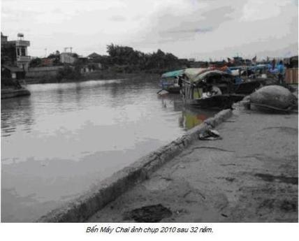
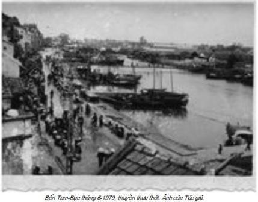
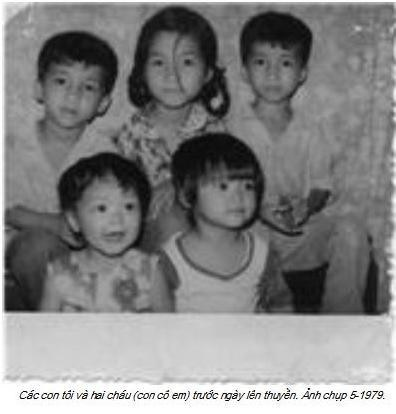

Chương 3

gười Hoa khắp nơi đổ về Hải Phòng như trẩy hội Chùa Hương, như có đại hội người Việt gốc Hoa miền Bắc không bằng.
Bến Tam Bạc, người đông như kiến và cũng đủ các loại thuyền đánh cá của các hợp tác xã đã quá cũ được thanh lý, thứ đồ thải không dùng, đem ra bán cho người Hoa làm thuyền vượt biển.
Thuyền nhiều như lá tre, đỗ chật bến, mạn thuyền nọ sát mạn thuyền kia, bước sang nhau dễ như đi trên đất liền.
Đông người như thế, vấn đề nhà trọ là điều rất khó khăn, trong khi đó Hải Phòng ít nhà trọ, còn hotel hầu như không có. Đi đâu cũng thấy người giải chiếu nằm la liệt khắp vỉa hè, gốc cây, vườn hoa, nhà thờ, đình chùa miếu mạo. Nghĩa là chỗ nào có thể trải chiếu xuống được là trải liền, miễn sao có chỗ ngồi, chỗ ngả lưng cho mẹ già, cho đàn con nheo nhóc và cho chính bản thân mình.
Hải Phòng nhốn nháo. Hải Phòng lộn xộn!
Hải Phòng nhếch nhách bẩn thỉu, hôi thối.
Các gốc cây đầy nước tiểu và phân người, vỉa hè, đường phố ngập ngụa rác bẩn, chẳng khác gì năm 1954, người các tỉnh đổ về Hải Phòng chờ tầu há mồm đến đón người theo đạo Thiên Chúa di cư vì tin đồn Chúa Giê-Su đã vào Nam vậy.
Vợ tôi và đàn con về trước. Tôi dặn đến nhà chị Chương ngủ nhờ một tối, mai tôi về sẽ tính sau. Gia đình chú thím tôi đã đi Hong Kong từ tháng Tư, sau khi ông chú thứ hai viết thư hỏi có đi không, tôi vẫn chưa quyết định dứt khoát, còn luyến tiếc Việt Nam lắm.
Chị Chương là con nuôi bác gái họ – con chị ruột bà nội tôi- ở Cát Dài. Ai ngờ gần 7 giờ tối, thấy vợ và đàn con tôi đến, anh chị đón tiếp rất lạnh nhạt, chẳng thèm hỏi xem đi đường ra sao, các cháu ăn uống gì chưa.
Khi thấy vợ tôi ngỏ lời xin tá túc một đêm để chờ tôi, cả nhà chị ta phản đối ra mặt, dứt khoát không nghe. Tôi biết vợ tôi chẳng thông thuộc đường phố Hải Phòng cho nên mới dặn đến ở nhờ. Vả lại giữa chị ta và gia đình tôi kể ra cũng khá thân thuộc. Vậy chị ta là ai? Trong lúc nước sôi lửa bỏng ai cũng tránh mặt người Hoa, sao tôi lại bảo vợ con về đó ngủ nhờ một đêm, gây phiền hà như vậy?
Xin thưa, chuyện rất dài dòng về mối quan hệ và lý do khiến tôi có thể phiền đến gia đình chị với ý nghĩ chị phải vui vẻ chấp nhận.
Trận đói tháng 3 năm Ất Dậu 1945, gia đình ông bà nộI tôi mở hiệu thuốc Bắc, khá giả nên đã nấu cháo phát chẩn cho những người đói, nhưng dường như được gần 10 ngày thì hết khả năng, vì gạo quá đắt và khó mua. Mỗi ngày phát chẩn một nồi 30 cháo hoa. Phát vào buổi trưa. Thời bấy giờ nồi thường bằng đồng, để dễ tính, người ta gọi nồi 5, nồi 10 hay nồi 30, có nghĩa là nấu cơm bằng nồi đó, số người ăn (no) trong bữa cơm sẽ là 5, là 10 hay 30. Nồi 30 là loại nồi đồng gần như to nhất mà ông tôi thường dùng để nấu cao xương. Ngày nào cũng nấu một nồi, phát hết thì thôi. Ngày mai phát tiếp. Đến ngày thứ tư, có hai mẹ con người đàn bà quần áo rách như tổ đìa, đứa con gái khoảng 14 tuổi, cả hai gầy nhom mang theo chiếc nồi đất nhỏ đến xin cháo. Cô tôi múc cháo vào nồi, người mẹ run run cảm ơn và đỡ lấy nhưng không đủ sức nữa, ngã lăn xuống đất chết. Đứa bé ôm mẹ khóc không nên lời, tất cả mọi người đều ái ngại, nhưng chẳng biết làm gì. Cảnh người chết đói diễn ra hàng ngày, chỗ nào chẳng có, cho nên thương là thương vậy chứ biết làm sao. Người ta chết trước cửa nhà mình, con gái người ta không biết sẽ đi đâu, sống ra sao.
Bà tôi an ủi đứa bé, hỏi nó xem thân nhân còn ai không. Nó chỉ biết lắc đầu trong nước mắt cùng tiếng nấc.
Hồi ấy, chết đói đầy đường, có đội xe bò của nhà nước nhặt xác người chết đem đi chôn tập thể. Đứa bé đó cố lê theo chiếc xe bò chở xác, nhưng rồi cũng mệt quá đành chịu. Thấy cảnh thật đáng thương, cô tôi bảo với bà tôi, hay nhận nó về làm con nuôi chị Bê. để trông con cho chị. Bà tôi vẫn còn lưỡng lự chưa quyết vì không biết vợ chồng chị Bê có nhận hay không. Cô tôi bảo, nếu chị Bê không nhận, má nhận nó làm con nuôi vậy. Chẳng biết bà tôi nghĩ gì nhưng đã nhận cô bé đó. Thế là từ hôm ấy, cô bé sống trong nhà tôi. Rất may, chỉ sau gần một tuần vợ chồng chị Bê từ Hà Nội xuống, đồng ý nhận cô bé làm con nuôi, đúng nghĩa ra là con ở.
Năm 1953, cô bé đã trưởng thành, hai bác tôi đã gả chồng cho chị và cấp cho chút vốn, coi như tiền công 8 năm, để buôn bán. Chị theo chồng về Hải Phòng. Từ đó chị coi gia đình tôi là ân nhân, là chỗ thân tình. Tôi gọi chị là chị Chương, còn chị gọi tôi là cậu, thân mật như là ruột thịt. Giỗ Tết vợ chồng chị vẫn đến nhà thắp hương và ăn cỗ.
Vợ tôi tức lắm, ứa nước mắt, nói vã bọt mép, gần như lạy chị miễn sao cho đàn con tá túc một đêm thôi, sáng mai dù tôi không về kịp cũng xin tìm nhà trọ chứ không dám phiền thêm. Vợ tôi giãi bày, đêm hôm thế này, đường phố không thuộc, họ mạc đã đi Hong Kong hết, đàn con nhỏ biết ngủ đâu, mai chồng về biết đâu mà tìm. Anh chồng xem ra thấy đuổi vợ con tôi ác quá nên buộc lòng chấp nhận, nhưng với điều kiện, ngày mai dù chồng về hay không về, vợ con tôi phải đi tìm chỗ trọ khác. Vợ tôi gạt nước mắt, chấp nhận.
Sau khi ăn xong phở, rửa qua loa cho các con và xin mượn một chiếc chiếu đôi cũ, trải xuống nền nhà xi măng, mấy mẹ con ôm nhau ngủ một mạch đến sáng.
Đúng như dự tính, tôi về đến nhà chị Chương gần một giờ chiều. Nghe vợ tố khổ, tôi uất lắm, nhưng vẫn cám ơn anh chị đã giúp nhà tôi và các cháu được tá túc một đêm, rồi gọi xích lô đến nhà trọ ở phố Cát Cụt gần phía ngã 3 đường Trần Phú cách bến Tam Bạc không xa.
Chị Chương đã chết trong lòng tôi từ hôm 30-4-1979. Ấy thế, năm 1988, không hiểu vợ chồng chị mò đâu ra được địa chỉ chú tôi, viết thư sang nài nỉ ông bà xin rủ lòng thương, làm giấy bảo lãnh cho hai đứa con gái đang bị nhốt ở trại cấm Hong Kong, nếu không sẽ phải đuổi về! Cả họ chúng tôi không ai trả lời.
Chủ trọ là mụ góa khoảng 50, không con không cháu, nét mặt khó đăm đăm, hễ mở miệng là ầm ầm như thể chửi cha người ta. Tuy thế, mụ có căn nhà khá rộng và mở quán trọ bình dân từ bao giờ tôi chẳng rõ, nhưng phải nói khá lâu, nếu như không nói, rất lâu. Có tất cả 3 phòng cho thuê, gọi là phòng cho oai, thực ra mụ ta kê mỗi buồng hai cái phản đôi, nước mồ hôi, ghét của hàng ngàn khách trọ đã làm màu gỗ mặt phản lên nước đen bóng màu gụ và chiếc màn chung hôi xì, đen xỉn màu bồ hóng. Mụ không tính phòng mà tính đầu người, bình quân lớn nhỏ 1 đồng/ngày đêm, nhưng cấm nấu nướng, cấm tắm giặt. Thuê trọ để nghỉ ngơi và ngủ, mà ngủ đêm tối kị hai vợ chồng son chung một phản.
Không thuê thì cút, già này không cần!
Chán vạn đứa đang van xin tao kia mà tao còn chưa thèm nhận. Chúng bay được ở đây là phúc tổ 70 đời rồi đó con. Ngủ ngoài đường, chỉ một đêm, đồ đạc sẽ bị cướp sạch. Khôn hồn biết điều, đừng có kêu ca phàn nàn đắt rẻ, bà mà nổi máu tam bành đuổi ráo.
Quân Tàu-ô sắp chết đến đít còn lắm chuyện.
Thế đấy!
Lấy tiền người ta chửi xơi xơi vào mặt. Vậy mà phải chịu cắm tăm! Mụ nói có lý, ngủ ngoài đường ngoài chợ, vợ chồng con cái thay nhau thức cả đêm trông đồ, mệt quá, nhỡ ngủ gật, bọn trộm, bọn xấu lấy hết đồ đạc tiền nong, chỉ có con đường ôm nhau nhảy xuống sông!
Tôi may mắn đến gặp mụ đúng vào lúc cả 3 phòng đều hết khách vì thuyền họ vừa nhổ neo chiều qua. Khi tôi hỏi, mụ cũng lại nhắc đúng bài ca mụ thuộc lòng cho vợ chồng tôi như đã từng diễn thuyết hàng chục lần bài diễn văn khó lọt tai này. Nghe xong, nhìn mụ từ đầu đến chân rồi lại từ chân đến đầu, tôi biết mụ này rắn lắm và rất quỷ quyệt cho nên không thể cãi lí với mụ, tôi đành đánh vào tình cảm, nói ngọt. Tôi viện lí do, các con tôi bé quá, ngày nắng không sao, chứ ngày mưa không thể cả nhà bồng bế nhau ra Chợ Sắt ăn ngày 2, 3 lần được. Thôi, bà đã thương thì thương cho chót, chúng tôi xin trả thêm mỗi ngày 1 đồng để bà cho phép nấu cơm ở đây – tôi mua một chiếc bếp dầu hỏa- và xin hứa sẽ giữ vệ sinh, nấu xong sẽ quét dọn sạch sẽ. Còn tắm rửa giặt giũ không dám phiền bà, chúng tôi ra nhà tắm công cộng. Bà ta cao giọng, hỉ hả bảo, nói như anh chị còn nghe được -trả thêm 1 đồng- vả lại tuy thế nhưng tôi cũng hay thương người. Thôi được, tôi đồng ý, nhưng ai hỏi, anh phải bảo, vợ anh là người cùng làng nên mới ưu tiên. Nghe rõ chưa?
Thế là xong khoản chỗ ngủ.
Bây giờ là chuyện tìm thuyền.
Không có máu cờ bạc, tôi không dại gì mang mạng sống của tôi, của vợ con ra cá cược với các chủ thuyền, cả đời chưa biết họ là ai. Nhất là mùa mưa bão ở miền Bắc thường bắt đầu từ tháng Năm kéo dài cho đến tháng Mười dương lịch. Thời gian này là thời kỳ nhiều bão, mà dự báo thời tiết của Nha Khí tượng Việt Nam toàn trật lấc. Chủ thuyền, cò thuyền nói như khướu, ai biết thật hay giả, hay ba hoa bốc phét lừa người nhẹ dạ cả tin. Cho nên tôi phải tìm hiểu thật kỹ về giá cả, chất lượng thuyền như trọng tải, xem ván thuyền dày hay mỏng, đã mục chưa, nếu có máy thì bao nhiêu mã lực, chạy buồm thì mấy cánh, tài cống là người ở đâu… có nghĩa là tôi “quái” hơn rất nhiều bà con người Hoa. Biết mà không dám nói thật nếu ai tò mò hỏi, bởi tôi không muốn bị ăn đòn của bọn cò thuyền ma cô.
Ai đã từng một lần đi tìm thuyền không thể quên những lời đường mật của cò và chủ thuyền. Chúng tôi là kẻ tứ xứ, chân ướt chân ráo lại mù tịt về chuyện thuyền bè, ai cũng muốn biến ngay khỏi Việt Nam càng sớm càng tốt, cho nên nếu không cẩn thận, cả tin tiêu đời liền. Tôi xin kể những cò và chủ thuyền nói với tôi.
- Anh/chú, yên tâm đi, thuyền tôi đảm bảo lắm.
- Ấy, tài công rất nhiều kinh nghiệm.
- Thuyền tôi tuy không có máy, nhưng buồm tốt lắm, chồng tôi là chủ nhiệm hợp tác xã đánh cá đấy.
- Giá của chúng tôi thế là mềm nhất, không tin cứ đi khảo giá đi.
Tôi xin kể một chuyện có thật tưởng như chuyện tiếu lâm, cổ tích. Sau khi đến Bắc Hải được 3 ngày, chúng tôi nhìn thấy một chiếc thuyền buồm được tầu hải quân Trung Quốc kéo vào bến.
Lên được bờ, tất cả bà con xúm lại đánh hội đồng gia đình chủ thuyền kiêm tài công. Cả nhà 6 người quỳ xuống vái như tế sao, cũng chẳng làm bà con hạ cơn ức. Tí nữa toi mạng. Miệng vợ chồng nó nói ngon nói ngọt, xơn xớt. Không có tầu cứu chắc họ chết.
Tôi đến xem, ôi thôi chính con vợ chủ thuyền này nói với tôi: “Thuyền nhà tôi tuy không có máy…”
Bà con vạch tội vợ chồng chủ thuyền tự nhận dân đánh cá Quảng Ninh nay muốn đi Hong Kong nhưng kẹt không đủ tiền trả cho hợp tác xã, nên nhận thêm bà con đồng hương đi cùng để trang trải. Chiếc thuyền buồm 2 cánh, trọng tải hơn chục tấn, nhận tất cả 70 người, ai ngờ sau khi tàu kéo hải quan Việt Nam cắt dây ở phao số 0 và cũng nghỉ lại một đêm ở Đảo Ngọc. Tờ mờ sáng hôm sau căng buồm ra khơi là đối mặt với tai họa. Hôm ấy tuy trời quang mây tạnh nhưng không có gió, tài công rởm, hơn 2 tiếng đồng hồ thuyền cứ chạy vòng tròn. Chuyện tức cười là cả nhà chủ thuyền kiêm tài công say sóng trước, nôn thốc nôn tháo, nằm lăn chiêng ra sàn thuyền. Bà con định quẳng cả 6 người nhà chủ thuyền xuống biển. Trên thuyền gần như nổi loạn vì cái chết cầm chắc trong tay, người lớn trẻ em đều la khóc. Trời cao vời vợi, biển rộng mênh mông, kêu gào cầu cứu sao thấu. May có vợ chồng A Sềnh -A Thành- trước theo thuyền buôn muối nên cũng biết chút đỉnh. May hơn nữa, 3 ngày trời đẹp không mưa không giông bão nên không đắm. Tầu hải quân chắc nhìn qua ống nhòm nên đã đến cứu trợ.
Cả nhà chủ thuyền xin tha mạng, biếu thuyền cho bà con, “nôn” hơn 30 lạng vàng trả lại. Chúng xin hồi hương. Hôm sau, công an Bắc Hải cho xe tải chở gia đình về nông trường. Vợ chồng tôi hú vía, tí nữa cũng kềnh.
Đi đến một thuyền đang có thợ hàn cánh quạt tầu thủy, nhìn những mối hàn, biết ngay thợ mới vào nghề. Mối hàn phải chồng đều lên nhau như từng lớp vẩy cá, vẩy tê-tê mới đạt kỹ thuật, đằng này mối hàn nham nhở, có chỗ chưa kín. Tôi tự hỏi không biết ra khơi có bị vỡ không. Nhưng tôi nghĩ còn hơn thuyền chỉ có buồm. Tôi hỏi thăm, người ta bảo thuyền của lão Ké và chỉ cho tôi đường tìm nhà lão. Ké theo như dân Lạng Sơn giải thích, là tiếng Thổ chứ không phải tiếng Quảng, dịch nghĩa chính xác rất khó, đại để hiểu nôm na, có gì “cho ké”, “chung” một tí. Còn tên thật tôi không biết. Lão là chủ nhiệm hợp tác xã xe bò khu An Dương, nghe đâu khá to, có đến hơn 20 chiếc, quân số trên dưới năm sáu chục người. Một chiếc xe bò tối thiểu 3 người, một người bò – cầm càng xe kéo – 2 người đi sau đẩy.
Tức tốc tôi đến nhà lão.
Nhà đông ơi là đông, toàn người Hoa từ Lạng Sơn xuống tìm lão. Tôi đến đúng lúc lão đang nhắm rượu. Nghe tôi trình bày, chắc cao hứng vì có men nên lão gật đầu liền. Vì người ta dặn, lão chỉ nhận người Lạng Sơn còn dân tỉnh khác dù nói sùi bọt mép cũng chẳng ăn thua gì đâu. Tôi hỏi giá cả, lão gạt phắt, giúp nhau là chính, đâu có phải buôn người, khi nào thuyền xong, mua hết đồ ăn và các thứ cần thiết sẽ tính bổ đầu từng gia đình. Còn mua bán, sửa chữa đến đâu lão sẽ yêu cầu mỗi chủ hộ góp dần. Nghe đã khúc ruột.
Nhưng thực ra có tên người nhà gặp riêng từng người ra giá. Bóp được bao nhiêu thì bóp, lão chẳng tha, vì vậy chẳng có giá nhất định, thu mỗi người khác nhau.
Nhà lúc nào cũng có vài chục người, trẻ con khóc như ri, sốt cả ruột, đau cả đầu. Đã thế thằng người nhà của lão viết tên từng chủ hộ vào bản “Đơn xin đi nước ngoài” do Ban Ngoại kiều của Sở Công an Hải Phòng cấp, vừa viết vừa đánh vần. Trong khi tầu biển “Trung Hoa vĩ đại” cứ rập rình ngoài phao số không, sẽ cập bến Hải Phòng sớm đón đồng bào hồi hương, gần 3 tuần nay vẫn cứ nói chứ không làm.
Đài phát thanh của cả hai bên lại được dịp tố cáo lẫn nhau, nước nào cũng cố chứng minh là thương dân.
Chửi nhau ngang hàng tôm hàng cá trên mọi phương tiện truyền thông! Chẳng biết có bài học thứ hai nữa không, cứ như mèo vờn chuột trên đài phát thanh cả hai nước, như chuẩn bị choảng nhau đến nơi.
Tình hình này không chuồn nhanh, tiền trong túi chi tiêu như thế này -tiền trọ, tiền ăn, tiền tắm giặt… đủ thứ bà dằm- vài tháng thì hết, chết là cái chắc! Tôi thấy thế, xung phong làm thư ký không lương cho lão Ké. Tưởng lão sẽ gật đầu sái cổ, ai ngờ lão gạt đi không cần. Bởi vì thu tiền thuyền, lão kín lắm, chẳng cho ai biết thu ai bao nhiêu, người nhiều người ít. Thư kí là chỗ thân cận tay chân, không biết nhiều cũng biết chút chút. Lão không ưng, không tin người lạ. Hơn nữa tất cả chủ thuyền đều có mối làm ăn riêng với công an, biến người Việt thành người Hoa. Thế mới kiếm chứ! Võ này trúng mánh nhiều, hơn đứt chuyện minh bạch kia, nên lão đâu có tin tôi. Không ngờ bà con Lạng Sơn kéo xuống rất đông. Biên giới đóng cửa, phải chạy đường biển. Lão mua thêm một thuyền nữa. Lúc này, thấy thằng tay sai làm chậm quá, bảo tôi làm thư kí điền đơn cho bà con giúp lão. Lão hứa riêng, bí mật, sẽ lấy tôi nửa số tiền đã thỏa thuận do giúp lão. Tôi thấy tiện cả đôi đường, vừa chóng nhổ neo lại dành được chút vốn có thể mua vàng cho vợ dắt cạp quần, khi cần có cái bán đi mà đút vào miệng cả nhà ở nơi đất khách quê người.
Được hơn 10 ngày, danh sách hai thuyền đã điền xong, tôi bảo lão lên Ban Ngoại kiều nộp hồ sơ. Theo quy định, có 2 bản, một bản nộp trước, bản giữ lại khi xuống thuyền nộp cho công an đọc lệnh xuất cảnh. Lão bảo chưa vội, bà con còn nhiều người muốn đi, phải mua thuyền nữa. Ai lại bỏ đồng hương thế sao đành!
Trời ơi! Chạy loạn mà cứ như đi du lịch! Tôi nghĩ lão này tham quá, kẹt lại là cái chắc, kẹt là chết.

Vì vậy, tôi xin lại 2 cây vàng tôi nộp trước, đi tìm thuyền khác. Bến Tam Bạc mấy tuần trước đông là thế, nay chỉ còn hơn chục chiếc, người thưa hẳn.
Chết thật rồi! Tôi nháo nhào đi tìm thuyền, chẳng còn tâm trạng nào kén với chọn. Hung tin đang dồn dập, khả năng sẽ đóng đường biển, không cho xuất cảnh. Như đã đóng đường bộ.
Đầu tháng Sáu, nửa đêm hàng chục xe tải bịt kín đi hốt tất cả gia đình người Hoa nằm đường nằm chợ. Sáng hôm sau, tôi từ nhà trọ ra bến tìm thuyền được biết tin khủng khiếp ấy. Lại thêm tin đồn, chẳng biết thực hư ra sao là tin tức và ảnh chụp người Hoa nằm vật vờ, đầu đường xó chợ bị gián điệp chuyển ra nước ngoài. Nước Việt Nam đang bị báo chí toàn thế giới chửi cho mất mặt. Nào bức tử bà con miền Nam có thân nhân là sĩ quan binh lính VNCH phải đi cải tạo, thương nhân bị tịch thu tài sản, bắt đi vùng kinh tế mới, nay lại bức tử người Hoa. Người Việt, người Hoa từ Bắc đến Nam phải vượt biển, nhiều thuyền bị đắm, nhiều thuyền bị hải tặc cướp bóc hãm hiếp. Tội ác ngút trời! Để xóa hết dấu tích, nhỡ có đoàn quốc tế nào đến, theo chỉ thị Hà Nội, công an Hải Phòng nửa đêm hốt trọn gói số nằm đường, không biết đưa đi đâu. Có trời biết! Cộng sản thâm lắm, bí mật lắm! Mai kia có muốn đi chỉ bằng con đường chui -bất hợp pháp- y hệt bà con người Việt ở miền Nam.
Chết thật rồi! Tôi giết vợ con chỉ vì tin lão Ké nên gần 3 tuần suốt ngày đến nhà lão, từ sáng sớm mãi gần 9 giờ đêm mới về gặp vợ con, rồi sáng hôm sau hơn 7 giờ đã phải đến nhà lão Ké làm việc không lương. Mọi chuyện xảy ra có biết gì đâu!
Tôi lo lắm, chẳng dám hé răng, sợ vợ tôi quẫn chí.
Tôi đi dọc bến Tam Bạc, thuyền nào cũng hỏi, may quá thuyền này có lệnh được xuất cảnh từ tuần trước, nhưng chạy thử từ Tam Bạc ra Cát Bà bánh lái gẫy, phải quay về sửa, đang cần tiền trả công thợ. Giá lão này cao lắm, tôi năm nỉ mãi, tất cả chỉ còn có 7 lượng xin nộp hết. Tay chủ thuyền này rất cáo già, nguyên là lái xe Công ty Vận tải 2 Hà Nội, một công ty xe tải rất nổi tiếng – cả xấu lẫn tốt- mà tôi biết rõ thông qua câu chuyện thật 100%.
Tỉnh nào cũng có công ty vận tải quốc doanh, cho nên số lái xe tải của tỉnh cũng gần trăm người bởi vì giao thông vận tải thời chiến ở miền Bắc dựa vào xe là chính. Đường sắt bị Mỹ ném bom phá hủy gần như tê liệt. Đường biển bị phong tỏa, chỉ còn đường bộ là huyết mạch giao thông. Cuối năm 1971, chuẩn bị cho chiến dịch đường 9 Nam Lào, mỗi tỉnh phải đóng góp cho trung ương từ 5 đến 10 lái xe ưu tú tham gia chiến dịch. Cậu Hùng, một trong số lái xe ưu tú của tỉnh tôi được đề cử, nhưng cậu ta từ chối ưu tú. Vì ai mà chả sợ chết. Thế là bị kỷ luật, tịch thu bằng lái, đuổi ra khỏi công ty, có nghĩa là hết đường sống.
Thải hồi không những mất việc, còn mất sổ gạo, các tem phiếu tiêu chuẩn khác, sống cũng như chết. Chả thế thời ấy, hễ thấy ai mặt ngơ ngơ ngác ngác, bạn bè đùa: mất sổ gạo hay sao mà ngẩn ngơ thế!
Nhưng có ai chịu chờ chết đâu!
Đến con giun, xéo lắm cũng quằn cơ mà!
Ba tháng sau, cậu Hùng lái chiếc xe tải có sơn tên Công ty Vận tải Quốc doanh Hà Nội 2 to tướng ở cánh cửa xe. Cậu ta cũng ngông, cố tình trêu ngươi lãnh đạo, đỗ xe ngay trong bãi xe của công ty, vào thăm anh em bạn bè cũ. Ai cũng mắt tròn mắt dẹt phục sát đất và ngấm ngầm ghen ghét. Tin này đến tai lãnh đạo công ty và ty giao thông vận tải. Thằng này bằng lái xe đã tịch thu, không hộ khẩu, không sổ gạo sao lại vào được Công ty 2 thế nhỉ? Mà lại có hộ khẩu Hà Nội? Ty giao thông “máy” cho Ty công an, phục kích để tóm cổ bằng được sau khi cậu Hùng trả hàng ở Điện Biên.
Ba hôm sau, xe tải của Hùng quay đầu về Hà Nội, vừa vào thị xã đã bị công an chặn lại kiểm tra giấy tờ, bằng lái xe. Hùng có đầy đủ giấy tờ và bằng lái xe tải xịn do trung tá Trần Đông, cục trưởng cục đường bộ, ký tên và đóng dấu (3). Kiểm tra thật kỹ, so sánh giữa bằng cũ và bằng mới của Hùng không phát hiện được sai sót gì. Tức hộc máu mà chẳng làm gì được, viên trung uý công an đưa hai bằng lái xe cùng tên họ, ngày tháng năm sinh của Hùng, hỏi một câu thật ngớ ngẩn:
- Tại sao cậu có bằng lái xe thứ hai này?
Hùng là dân lái xe tải lâu năm mà ở miền Bắc người ta có câu “Bụt mà cầm vô lăng, 6 tháng sau không buôn lậu cũng thành giang hồ thứ thiệt”, cho nên cậu thủng thẳng:
- Các anh đi mà hỏi trung tá Trần Đông (4) ấy, sao lại hỏi tôi. Kiểm tra xong chưa, trả lại bằng lái xe cho tôi để còn về Hà Nội.
- Tại sao anh có hộ khẩu Hà Nội?
- Ơ hay, sao lại hỏi tôi, anh phải hỏi chủ tịch Trần Duy Hưng chứ (5). Nào xong chưa?
Lấy lại giấy tờ và bằng lái xe, Hùng nói trống không:
- Chào!
Vừa mở cửa xe, vừa huýt sáo, Hùng lên xe như trêu tức.
“Được lắm, mày sẽ chết với ông! Chạy đường Sơn La, Điện Biên dứt khoát buôn thuốc phiện mới chóng giàu chứ. Bắt được, chúng ông sẽ cho mày dựa cột.”
Hùng chóng giàu thật. Chỉ sau mấy tháng lái xe Đoàn 2, Hùng mua đài, xe đạp mới tinh cho vợ. Không những thế ngày hè nóng bức mang cả quạt cây Hoa Sinh Trung Quốc đưa ra chuồng lợn quạt mát cho lợn. Thời ấy, mấy ai có tiền mua quạt điện huống chi quạt cây Hoa Sinh rất đắt và khó mua. Nghe tổ trưởng dân phố báo cáo làm gì công an thị xã chả tức đến tận cổ.
Hùng biết lắm chứ.
Một tháng sau, Hùng lại chở hàng lên Điện Biên, xe quay về, tổ công an 3 người chặn xe Hùng, nói:
- Chúng tôi kiểm tra xe.
- Xin các anh cứ kiểm tra, nhưng tôi nói rõ, thùng xe chỉ toàn mùn cưa, các anh bắt tôi đổ ra khám không thấy hàng cấm, các anh phải xúc trả lại như cũ.
Ba tay cảnh sát nhìn nhau, nghi Hùng giấu cơm đen trong thùng xe chứa cám cưa. Tổ công an gật đầu đồng ý. Hùng không chịu, yêu cầu lập biên bản kí xác nhận mới chịu cho đổ cám cưa xuống. Chắc chắn 100% có cơm đen nó mới chơi khăm thế. Được, biên bản thì biên bản, chúng ông sợ gì. Mày sẽ dựa cột là cái chắc!
Không ngờ chiếc xe tải 4 tấn Giải Phóng do Trung Quốc sản xuất, đổ hết cám cưa ra chẳng tìm thấy một gói cơm đen nào. Báo hại cho tổ công an một bữa mất mặt và phải thuê 5 người xúc cám cưa đổ lại lên thùng xe! Lái xe Công ty 2 tiếng nổi như cồn như thế đó.
Nộp tiền xong, tôi về quán trọ thuê hai xe xích lô chở tất cả đồ đạc và vợ con ra bến Tam Bạc lên thuyền. Những người trên thuyền tức lắm và tự nhiên ghét gia đình tôi. Họ bảo vì nhận thêm chúng tôi, họ phải dẹp bớt chỗ, suất ăn của họ phải chia cho chúng tôi. Đại để chúng tôi là kẻ đáng ghét. May qua có anh chị Sâm làm ở nhà máy xi măng Hải Phòng, anh chị được nhiều người kính nể, can thiệp:
- Sao lại ghét bỏ cô chú ấy và các cháu bé. Cô chú cũng phải đóng tiền thuyền chứ có đi không đâu. Thôi mỗi ngưòi chịu khó chịu chật một chút, cùng cảnh khốn nạn cả, hay ho gì mà cắn xé lẫn nhau.
Nhờ anh chị mà chúng tôi có chỗ trên thuyền chỉ rộng hơn chiếc chiếu đơn ở mãi tít cuối khoang. Thôi thế là may. Hai ngày nữa có con nước, thuyền nhổ neo.
Vĩnh biệt Việt Nam!
Vĩnh biệt Hải Phòng thân yêu, nơi hè đến phượng đỏ rực trời, đỏ cả những kỷ niệm của tuổi học trò.
Vĩnh biệt! Vĩnh biệt tất cả!
Vĩnh biệt mồ mả tổ tiên! Vĩnh biệt nơi chôn nhau cắt rốn! Vĩnh biệt cả những kỷ niệm vui, buồn!
Thuyền của tôi dài chừng 20 mét, trọng tải 25 tấn. Có buồm và có máy nổ 25 mã lực, thế mà kể cả gia đình tôi là 212 người lớn nhỏ! Đến Bắc Hải, sau 3 tuần sửa thuyền, lão chủ thuyền nhận thêm 22 người nữa với lý do lấy tiền trang trải và thuê tầu kéo. Tổng số thuyền tôi khi đến Hong Kong 234 người! Có nghĩa là nếu vì chuyện gì đó, tất cả mọi người ngồi trong khoang thuyền chỉ đủ chỗ ngồi bó gối!
Đêm 17-6, chẳng hiểu ví lý do gì, chủ thuyền bắt mọi người phải xuống khoang, không được lên boong. Tôi bị ép ngồi bó gối dưới hầm sát máy nổ, ngạt thở tưởng chết sau gần 2 tiếng đồng hồ.
Sáng hôm sau, lão tài cống mới lôi ra một cái cờ đen có hình đầu lâu xương chéo và những hình thù kỳ quái, định kéo lên cột buồm. Tôi hỏi:
- Các bác làm gì thế?
- Treo lên để làm tín hiệu, tầu thuyền nước ngoài trông thấy họ sẽ cứu.
- Nhưng các bác có biết cờ này là cờ của bọn cướp biển không? Treo lên, tầu thuyền nước ngoài tưởng thuyền mình là cướp biển họ không cứu mà còn bắn nữa là khác.
Tất cả đàn ông thuyền tôi tranh cãi hăng lắm, mãi sau họ cho ý kiến của tôi hợp lý. Hú vía, thuyền chạy tị nạn, tự nhiên treo cờ biến mình thành cướp biển! Lạ thật!
Không biết có phải công an Sở Ngoại kiều Hải phòng xúi mua cờ cướp biển để ăn đạn giữa biển Đông hay không? Phải có người xúi khôn xúi dại chủ thuyền mới bỏ tiền mua chứ! Đến nay tôi vẫn chưa hiểu lão chủ thuyền và lão tài cống nghĩ gì lại đi mua cờ cướp biển rồi định dán mác cho mình!
Thuyền đông như thế nhưng chưa kể gạo vài tấn, 7 thùng phi 250kg dầu ma-zút. Nước ngọt 3 thùng phi, nồi niêu xoong chảo của nhà bếp và đồ đạc của các gia dình cộng lại thì đã vượt trọng tải! Mặt nước lúc nào cũng xấp xỉ cách mạn thuyền khoảng 30 cm, sóng to một chút nước ào cả lên thuyền. Chỉ gia đình anh chị Sâm, chủ thuyền và họ hàng chủ thuyền có những xốp hình khối chữ nhật 20cm x 30cm buộc lại làm phao bảo hiểm. Như vậy gần 40 hộ gia đình chỉ có 4 gia đình có phao cứu hộ. Còn chúng tôi, nếu thuyền đắm hay vỡ sẽ được Đại Dương Thần Nữ đón về thủy cung liền! Chúng tôi đã đi biển bao giờ đâu mà biết mua phao cứu hộ, chẳng ai bảo, cũng chẳng nghĩ đến, cứ tưởng lên thuyền như lên xe đò, xe chết máy hành khách xuống, chờ nhà xe chữa xong đi tiếp. Đi biển, thuyền hỏng nhìn thấy tử thần đang vung lưỡi hái đứng ngay trước mặt!
Mới bẩy giờ sáng ngày 15-6-1979, mặt trời đã gay gắt, ba thuyền được xuất cảnh đã neo ngay bến Máy Chai, tất cả chúng tôi phải lên bờ chờ công an ngoại kiều của Hải phòng đọc lệnh. Gọi là bến Máy Chai không phải bến này bán chai mằ gần nơi đây có nhà máy sản xuất chai lọ từ thời Pháp thuộc, năm 1960 đổi tên, Nhà máy Thủy Tinh, nhưng người ta vẫn quen gọi Nhà Máy Chai. Cả bến có mấy cây bàng mới trồng, cao chưa đầy 2 thước, gần ngàn người đứng dưới gốc tránh nắng chờ công an.


Gần 8 giờ sáng, chiếc xa-lan đỗ xịch ngay trước bến, năm sĩ quan công an lấy bàn ghế đưa xuống sát bến. Một bàn kê sát ngay lối lên xuống dưới tán che của cây dù to, một chiếc ghế để giữa.
Năm sĩ quan công an ngoại kiều dưới sự chỉ huy của đạI úy Hùng làm thủ tục đọc lệnh trục xuất (cảnh) người Hoa, tống khứ ra biển Đông.
Thuyền chúng tôi là thuyền cuối.
Gần trưa, nắng như đổ lửa, từng hộ gia đình đọc theo danh sách. Đến lượt gia đình tôi nộp giấy xuất cảnh, hộ khẩu, sổ gạo, chứng minh thư, tem phiếu, thiếu úy Minh hỏi:
- Anh chị phải nộp hết giấy tờ nhà nước Việt nam kể cả giấy khai sinh trẻ em, bằng cấp anh chị có.
Tôi vặn lại:
- Tại sao chúng tôi phải nộp bằng cấp và giấy khai sinh các con tôi?
Đại úy Hùng, người ngồi ghế dưới bóng dâm của tán dù, lên tiếng:
- Đây là quy định, tất cả giấy tờ chính phủ cấp thuộc tài sản quốc gia, chúng tôi phải thu hồi lại.
Anh chị Sâm đứng sau tôi nói nhỏ:
- Cần đéo gì mấy tờ giấy ấy, mạng còn chả thiết, thiết gì đám giấy lộn.
Vợ tôi móc trong túi xách tay lấy hết giấy tờ để lên mặt bàn, tên thiếu úy Minh xem từng giấy, vứt ngay vào chiếc nón đặt ngửa trên bàn, y như đám giấy lộn.
Thế là xong.
Lên thuyền, chúng tôi không có bất cứ giấy tờ tùy thân nào, như đàn gia súc không tên tuổi, không nghề nghiệp, không quê hương bị tống khứ ra biển khơi làm mồi cho cá mập. Tôi cõng thằng con út trên lưng, một tay cầm chiếc can 10 lít nước đun sôi từ đêm qua, một tay xách túi đồ ăn vừa mua ở bến cho bữa trưa, lội qua bùn bước chậm chạp, nặng nề lên chiếc cầu bằng ván lên thuyền. Hai đứa lớn cầm tay mẹ, ngơ ngác bước theo.
Đứng trên sạp thuyền, nhìn xuống bến, cảm giác nao nao buồn khó tả ập đến, từ giờ phút này, chúng tôi là người nước ngoài, không được phép đặt chân xuống mảnh đất Hải phòng thân thương này nữa, nơi tôi sinh ra, lớn lên, nơi mồ mà ông bà cha mẹ tôi vẫn nằm đây.
Thôi thế là hết, thế là xong. Vĩnh viễn xa Việt nam, xa tất cả những kỷ niệm buồn vui. Chúng tôi phải bỏ tất cả, phảI ra đi, đau đớn lắm. Nhìn xung quanh, nắng hè chang chang, gay gắt, không một cơn gió, tôi muốn ngửa mặt lên trời kêu lên:
Xanh kia thăm thẳm từng trên
Vì ai gây dựng cho nên nỗI này?
Làm thủ tục xuất cảnh xong, gần 3 giờ chiều mới có con nước, ba thuyền chúng tôi rời bến Máy Chai do xà-lan công an ngoại kiều Hải Phòng kéo ra phao số Không, tống ra biển Đông.
Hơn 24 giờ lên lênh đênh trên vịnh Bắc Bộ, khoảng 6 giờ tối ngày 16-6-1979, chúng tôi đến phao số Không (Zero), họ cắt dây. Trước khi xà-lan quay mũi lái, tên đại úy Hùng vét hết những đồng tiền Việt trong hầu bao, chúc một câu xanh rờn:
- Chúc bà con lên đường ăn cá, đừng để cá ăn!”
Tất cả chúng tôi căm lắm, chửi thầm.
Đẩy người ta ra biển, sống chết cách nhau gang tấc, thế mà chúng nỡ mở mồm nói gở như vậy.
Sà-lan cảnh sát quay mũi rẽ sóng hướng về đất liền. Tất cả chúng tôi đứng trên sạp nhìn theo. Có lẽ ai cũng như ai, nỗi buồn sâu lắng tận đáy lòng hiện lên nét mặt từng người, tất cả buồn xé ruột, im lặng trong nắng chiều giữa biển khơi.
Tôi đứng trên sạp, vòng tay ôm lấy vợ và 3 đứa con rất lâu để an ủi vợ con hay an ủi chính mình. Tôi biết vợ tôi buồn, buồn lắm lắm, bởi từ giờ phút này, hy vọng được nhìn thấy cha mẹ già, các dì các cậu lần cuối cùng, thăm mảnh đất quê hương nghèo khó, nơi có mồ mả ông bà tổ tiên, nơi có bờ tre, ruộng lúa, con trâu của một thời thơ ấu gắn bó trước khi rời Việt nam chấm hết.
Ngày ấy, không ai dám hy vọng và nghĩ rằng sẽ có một ngày trở về Việt nam thăm quê hương, bởi vì từ tháng 4-1975, những người vượt biên đều bị chính phủ Việt nam lên án, chửi rủa rất tàn tệ bằng đủ những từ xấu xa, bẩn thỉu nhất. Họ gọi tất cả người Việt sống ở nước ngoài là bọn phản động lưu vong, lười biếng bám đít đế quốc, cặn bã của xã hội.
Giờ đây thuyền chúng tôi ra đi theo hướng của bọn lưu vong cực kỳ phản động, vậy ai dám hy vọng có ngày về, trừ khi chế độ ấy sụp đổ.
Trời bắt đầu chạng vạng, màn đêm ập xuống. Chủ thuyền, tài công không dám mạo hiểm ra khơi. Đêm ấy, ba thuyền thả neo gần đảo Ngọc nghỉ lại, sáng mai sẽ ra đi. Khoảng nửa đêm, chúng tôi đang ngủ, bỗng nhiên tiếng xuồng ca-nô từ đâu dội lại, sóng đánh vào mạn thuyền, thuyền tròng trành, chao đảo, tất cả bừng tỉnh, chưa hiểu đầu cua tai nheo, đã thấy 6-7 tên sï quan và lính biên phòng đảo Ngọc từ xuồng máy nhảy lên thuyền, một tay lăm lăm khẩu AK, một tay chiếc đèn pin soi vào mặt từng người chúng tôi với giọng nạt nộ:
- Điện khẩn chúng tôi vừa nhận được (?) có 3 thuyền vượt biên trái phép, tất cả phải ngồi im, chống cự sẽ bị bắn. Chúng tôi kiểm tra giấy tờ!
Làm gì còn giấy tờ tùy thân, lên thuyền tất cả là con số không: Không tên tuổI, không tổ quốc, không nghề nghiệp, chỉ là rác rưởi bị chính phủ Cộng Hòa Xã Hội Chủ Nghĩa Việt nam quét ra biển. Bây giờ chúng tôi trở thành kẻ vượt biên bất hợp pháp. Trẻ con sợ hãi, co rúm, bám chặt, nép sát vào cha mẹ. Người lớn ngơ ngác, vừa sợ vừa căm phẫn, nhưng không biết làm gì hơn, đành ngồi yên. Ba tên công an vũ trang biên phòng đứng chặn mũi thuyền và buồng lái, 4 thằng còn lại xuống khoang, soi đèn pin vào mặt từng người, quát:
- Giấy tờ đâu?
- Ai là chủ thuyền?
Khoang thuyền chật ních, tất cả chúng tôi ngồi bó gối, ôm đàn con, ồn ào như ong vỡ tổ, trẻ con khóc thét lên, nhiều cụ già chắp tay cầu trời khấn phật phù hộ độ trì tai qua nạn khỏi.
- Công an ngoại kiều thu hết giấy tờ trước khi lên thuyền.
- Làm gì còn giấy tờ mà kiểm tra.
- Hỏi đại úy Hùng, ông ta là người thu giấy tờ.
- Chủ thuyền đâu?
- Dạ, tôi đây.
- Theo chúng tôi lên gặp ban chỉ huy.
Chủ thuyền, A Sùi-A Thụy- phải theo chúng lên đảo, “thương thuyết” gần một tiếng chúng mới chịu “ăn” 5 chỉ vàng mà chủ thuyền “nôn” ra để chúng tôi được “coi như có giấy tờ, vượt biên hợp pháp!” Số vàng này, sau đó, nhà thuyền lại bổ vào đầu thuyền nhân.
Sáng sớm hôm sau, 17-6, mới gần 5 giờ, mặt trời đỏ như hòn than hồng từ từ nhô dần lên khỏi mặt biển, to tròn như cái nong. Phương đông hửng sáng, giát vàng trên nền trời. Vài dải mây trắng mỏng như lụa vắt ngang, báo hiệu một ngày đẹp trời. Khung cảnh thật đẹp, nhưng tâm trạng đâu mà ngắm bình minh trên biển.
Thuyền nhổ neo giã từ hải phận Việt Nam, bồi hồi khôn tả. Thế là hết. Vĩnh biệt! Vĩnh biệt những kỷ niệm vui buồn, vĩnh biệt mồ mả tổ tiên, vĩnh biệt những ngày xưa thân ái. Vĩnh biệt!
Ba thuyền, chỉ có thuyền tôi có buồm và có chiếc máy nổ 25 mã lực. Tiếng máy nổ bành bạch, đẩy nước, đưa thuyền tôi về phía trước chậm chạp như con ốc sên bò giữa biển khơi. Chậm còn hơn không, đến 2 giờ chiều, hai chiếc thuyền buồm rớt lại phía sau chỉ còn như một chấm nâu trên mặt biển. Tài công, một ông già ngườI Việt, ngoại 60, sâu rượu và khó tính, tất cả thuyền nịnh ông hơn nịnh bố già. Biết tính mạng hơn 200 con người trong tay, ông vòi vĩnh, chẳng ai dám trái ý.
Trưa ngày 18-6-1979, vợ con tôi cũng như nhiều phụ nữa và trẻ con khác say sóng, nôn mửa, nằm bệt dưới khoang, tôi đang loay hoay lau chùi dọn dẹp, lấy thuốc chống say cho vợ con, bỗng nhiên nghe tiếng loa phóng thanh oang oang:
- Không được vi phạm hải phận của chúng tôi.
Tất cả mọi người choàng tỉnh.
Tôi vội lên sạp thuyền xem sự thể ra sao.
Một tàu chiến hải quân Trung Quốc đang áp sát dần thuyền chúng tôi, trên boong tàu, thủy thủ Trung Quốc trong quân phục hải quân, lăm lăm tiểu liên, một dàn đại liên, đại bác chĩa nòng vào thuyền, một sĩ quan tay cầm loa phóng thanh nói bằng hai thứ tiếng Việt và Quảng rất rành rọt:
- Yêu cầu thuyền các ông không được xâm phạm hải phận chúng tôi. Phải rời ngay hải phận, không sẽ bị tiêu diệt.
Tôi không thể tin được tai mình.
Đây, đồng bào, đồng chí của tổ quốc Trung Hoa vĩ đại của chúng tôi ư? Mới ngày 15-6 khi chưa rời bến Máy Chai, chúng tôi vẫn được chính quyền Đặng Tiểu Bình trên Đài phát thanh Bắc Kinh khoác cho chiếc áo Hoa kiều yêu nước với biết bao mỹ từ tươi đẹp, kêu gọi hồi hương.
Giờ đây thuyền chúng tôi mới mấp mé hải phận “tổ quốc vĩ đại, thân yêu”, chính hải quân của Đặng Tiểu Bình đe dọa nổ súng, tiêu diệt nếu thuyền không rời xa lãnh hải. Hơn 200 người trên thuyền là người dân vô tội, đàn bà trẻ con, không tấc sắt trong tay.
Khi tàu hải quân Trung Quốc áp sát, chúng tôi già trẻ lớn bé hơn 200 người đứng lố nhố trên sàn thuyền, tất cả đăm đăm nhìn bọn họ. Những mũi súng máy của lính hải quân chĩa thẳng vào chúng tôi như sẵn sàng nhả đạn.
Trước khi ra đi, chúng tôi thường nghe BBC Việt ngữ, anh Đỗ Văn đưa tin, rất nhiều thuyền tỵ nạn gặp tàu nước ngoài đuợc cứu trợ, đưa đến nơi an toàn.
Không ngờ, thuyền chúng tôi gặp tàu hải quân Trung Quốc. Họ không cứu giúp lại tìm mọi cách đẩy chúng tôi ra xa hơn giữa trùng dương nguy hiểm.
Họ là ai? Họ chính là người Trung Quốc, là đồng bào, trong huyết quản họ và chúng tôi có chung dòng máu Trung Hoa. Sao họ tàn ác đến như vậy?
Họ là người hay loài mãnh thú?
Chủ thuyền bảo, “Chúng tôi, Hoa kiều Việt Nam tỵ nạn đi Hong Kong, vì thuyền mỏng, nhỏ bé, đông người, sợ đắm, chỉ xin được chạy sát bờ, chứ không dám xâm phạm đất liền.” Loa phóng thanh vẫn sa sả đuổi và đe dọa. Tài công đành phải lái thuyền xa bờ, sợ sóng tàu làm thuyền chìm. Tất cả chúng tôi căm lắm, chửi rủa chúng cùng bè lũ Đặng Tiểu Bình thậm tệ sau khi chúng đi xa.
Mùa mưa bão ờ Vịnh Bắc bộ bắt đầu từ tháng 5 đến hết tháng 10 dương lịch.
Chúng tôi vượt biển giữa tháng 6, đúng mùa giông bão, vì thế hầu hết các thuyền đều gặp bão. Nửa đêm ngày 19-6-1979, thuyền chúng tôi gặp cơn giông.
Gió rít, mưa xối xả, quất từng đợt áo ào như thác đổ lên thuyền. Những đợt sóng lớn đổ ập lên sàn, lòng thuyền đầy nước. Thuyền chao đảo, nghiêng ngả, trồi lên, ngụp xuống. Tôi cùng ba người thi nhau tát nước ngập dưới khoang. Mưa vẫn xối xả, gió vẫn lồng lộn, cột buồm kêu răng rắc như muốn gãy. Các cụ bà trong khoang thắp hương, đốt vàng mã, đốt tiền, thả gạo xuống mặt biển qua cửa sổ, cầu Trời khấn Phật phù hộ độ trì tai qua nạn khỏi. Tiếng trẻ con khóc thét, tiếng gọi nhau í ới, nước tràn xuống khoang, khói hương khói vàng mã của các bà các cụ tạo lên cảnh hỗn loạn xô bồ khủng khiếp trước giờ thuyền đắm. Tất cả các bà mẹ ôm chặt con trong vòng tay, họ đều nghĩ, nếu thuyền đắm, cùng chết chứ không xa nhau.
Thuyền vẫn chao đảo, nghiêng ngả, mũi thuyền chồm lên, chúi xuống như người say rượu vấp ngã trong cơn giông, đàn ông lên hết sạp thuyền ứng cứu.
Tiếng tài công hét trong gió bão:
- Chặt cột buồm mau.
- Rìu ở đâu? Tiếng ai đó thét lên.
Lại có tiếng thét trong gió bão:
- Chặt dây, hạ buồm trước.
- Dao ở đâu?
Chúng tôi hoảng loạn, thuyền sắp đắm, tưởng như vô vọng. Vừa lúc đó một thuyền đánh cá Trung Quốc ào tới, áp mạn thuyền, 2 người đàn ông lực lưỡng nhảy sang tay cầm dây chão bằng ni-lông giúp thuyền chúng tôi áp sát vào thuyền họ. Sau nhiều phút vật lộn, họ đã kéo thuyền chúng tôi thoát ra khỏi cơn giông. Kéo đến gần thị xã Bắc Hải, nhìn thấy ánh đèn biển mới cắt dây. Họ yêu cầu trả công 5 chiếc đồng hồ Liên-xô và 2 thùng phuy 200 lít dầu ma-dzút. Không có họ, chắc chúng tôi đêm ấy đã làm thần dân của Thần Nữ biển Nam Hải, đâu có ngày được tuyên thệ làm thần dân của Nữ Hoàng Elizabeth đệ Nhị tại London.
Thuyền chúng tôi đậu lại, tất cả ngủ vùi, sau một đêm hoảng loạn.
Sáng hôm sau, một chiếc ca-nô hải quân Trung Quốc chạy đến, hai sĩ quan lên làm việc với chủ thuyền. Họ đưa tập giấy, yêu cầu chúng tôi phải khai tên tuổi, nghề nghiệp, số người trong gia đình trên thuyền. Khai xong, họ kéo chúng tôi vào bến.
Bờ biển Bắc Hải đầy người và gần 10 thuyền người Việt đang neo đậu chờ sửa chữa nằm la liệt trên bến. Tôi gặp gia đình chị Thủy, quen từ hồi còn vật vạ ở bến Tam Bạc. Thuyền anh chị xuất cảnh trước chúng tôi cả tháng, tưởng đã đến Hong Kong, không ngờ gặp ở đây, ngay bến Bắc Hải này. Anh chị kể, thuyền cũng gặp cơn giông, được thuyền đánh cá kéo, cũng phải sửa thuyền, 2 tuần trước, xuất bến đi được 2 ngày, va phải đá ngầm, may không đắm, lại thuyền đánh cá kéo về bến. Vừa kể, chị vừa chắp tay như thể vái Trời Phật đã rủ lòng thương, cứu gia đình anh chị tai qua nạn khỏi.
Anh chị dắt chúng tôi về lán. Gọi là lán, thực ra là 4 mảnh vải mưa đem từ Việt Nam, kiếm mấy cái cọc cũ của người xuất bến bỏ lại, buộc túm quây 3 bên làm chỗ che mưa che nắng cho đàn con. Chiếc chiếu đôi trải ngay xuống nền đất làm giường. Anh chị nhường tôi một khoảng đất sát bên, làm lán. Chị bảo, dân đây cũng nghèo, bán bất cứ thứ gì họ cũng mua. Riêng gạo, thực phẩm bán tự do đầy chợ, mua bao nhiêu cũng được, khác Việt Nam ghê lắm. Bến Bắc Hải này đắt nhất là củi đun, tằn tiện ngày nấu 2 bữa cũng mất 50 xu (1 tệ =100 xu). Cuối bãi có xưởng cưa, xẻ gỗ đóng và sửa thuyền nhưng họ không cho dân tị nạn mình kiếm củi và lấy mùn cưa.
Chị ghé sát vào tai nhà tôi thì thào:
- Buổi trưa chúng nghỉ, mấy cháu nhà cô chú có thể lấy trộm mùn cưa và củi vụn được đấy. Mai thuyền anh chị xuất bến, bếp đun mùn cưa anh chị cho, khỏi phải tìm.
Tất cả thuyền chúng tôi đều là thuyền vận chuyển, thuyền đánh cá của các hợp tác xã thanh lý. Đồ thanh lý không đảm bảo an toàn hoạt động, họ đem bán cho chúng tôi. Các chủ thuyền tham rẻ, mua, làm phương tiện chở người vượt biển. Chính phủ và công an ngoại kiều Hải Phòng biết thuyền không an toàn, nhưng làm ngơ. Tính mạng hàng vạn người vượt biển không là gì với nhà nước CHXHCN Việt Nam. Chính vì thế, hầu hết thuyền ở miền Bắc chỉ sau vài ngày trên biển đều phải sửa chữa không thể tiếp tục cuộc hành trình.
Những ngày thuyền tôi sửa chữa ở bờ biển Bắc Hải cũng nhờ hai thằng con đỡ được khá tiền. Chủ thuyền chỉ phát gạo, một thứ gạo mọt mua từ Hải phòng, còn thực phẩm tự túc. Trước khi đi, tôi mua 10 kg lạp-xường dự trữ. Những ngày ở Bắc Hải, ăn nhiều lạp-xường đến nỗi hơn chục năm sau hễ ngửi thấy mùi lạp-xường là muốn ói.
Hơn 3 tuần nằm vật nằm vạ ở Bắc Hải, gia đình tôi bán nốt những gì còn sót lại. Dân Bắc Hải thời ấy cũng nghèo, cái gì họ cũng mua, từ đồng hồ, máy ảnh, kể cả quần áo cũ, chăn màn, giày dép… và họ cũng tìm cách mua với giá thật rẻ.
Thời bấy giờ, Đặng Tiểu Bình đã có những đường lối kinh tế đổi mới, mở cửa, nền kinh tế thị trường bắt đầu phát triển. Lương thực thực phẩm đã bán tự do bên cạnh các cửa hàng phân phối theo tem phiếu, nhiều mặt hàng mua chợ rẻ hơn mua cửa hàng mậu dịch rất nhiều. Riêng bến Bắc Hải này đắt nhất là củi. Đúng theo nghĩa “củi quế”. Nhà tôi, 5 mạng, chỉ tính tiền thức ăn thật tiết kiệm một ngày 1 Nhân dân tệ thì tiền củi phải 5 hào, có nghĩa là nàng nửa số tiền ăn. Bán nốt chiếc máy ảnh Zennit của Nga, đồng hồ đeo tay của vợ, màn tuyn, chiếc mũ cà tàng và chiếc va-li cùng chiếc áo len cho cậu Lý A Sinh, cái gì bán được đều bán sạch.
Cả nhà nằm bờ nằm bụi chờ sửa thuyền, ngày nào cũng đảo qua xem thuyền sửa đến đâu. Hơn hai tuần, thuyền vẫn chưa sửa xong, xem ra có khi hàng tháng, lâu nữa tiền đâu ra. Cuộc sống khốn khổ trăm bề.
Dân miền Bắc ai cũng biết bếp đun mùn cưa hay đun vỏ trấu, nhưng có thể bà con miền Trung hay miền Nam có thể chưa hiểu. Bếp đun mùn cưa hay vỏ trấu như sau:
Một hộp sắt tây tròn (hoặc đắp đất) đường kính tối thiểu cũng phải từ 18 đến 20 phân (cm) trở lên, một đầu còn nguyên đáy, đục khéo phần thân sát đáy 1 hình chữ nhật hay hình vuông để cho những thanh củi chẻ nhỏ làm mồi lửa. Lấy 1 vỏ chai để chính giữa, đổ mùn cưa hay vỏ trấu xung quanh, nén thật chặt, rút vỏ chai, khoét 1 lỗ ngay phần cửa của lon hộp. Đặt kiềng lên trên hay kê gạch sao cho cao hơn miệng hộp là thành chiếc bếp. Đây là cách làm thông thường của dân thị xã, thành phố miền Bắc khi cuộc sống thiếu đủ thứ trong một xã hội Xếp Hàng Cả Ngày – XHCN-.
Túng phải làm liều, khi xưởng nghỉ trưa, vợ tôi đưa mỗi đứa con cầm cái rá, xúc trộm mùn cưa, con chị đi kiếm xung quanh, nhặt vài miếng gỗ vụn rồi ù té chạy. Coi như một ngày không phải mua chất đốt, tiền ấy bù vào bữa cơm đạm bạc của đời tỵ nạn. Đứa lớn mới lên hơn 6 tuổi, đứa bé lên 4 đã phải hành nghề ăn trộm mùn cưa! Thật là đau đớn! Đến nay, ôn lại chuyện cũ các con tôi vẫn nhớ. Con chị bảo, có lần đang lò mò tìm củi, bị một bà túm áo, sợ quá, phát khóc. May có anh thanh niên nói gì với bà kia nên tha. Từ đó trước khi nghỉ, người thanh niên kia vẫy tay gọi 3 đứa con tôi lại, cho lấy 2 rá mùn cưa và dăm que gỗ vụn.
Bến Bắc Hải có lúc đông hơn ngàn người, nằm vật nằm vạ, mưa nắng bất kỳ nên nhiều người ốm. Ngay đầu bến, chính phủ địa phương lập trạm y tế. Sau thời gian ăn ở mất vệ sinh, vợ tôi bị mắc bệnh viêm gan siêu vi trùng. Trước khi rời Việt Nam, tôi chuẩn bị khá đầy đủ thuốc, từ kháng sinh, sinh tố, cảm cúm, thuốc chống say đếu có, kể cả ống nghe, dụng cụ tiêm chủng. Bệnh do siêu vi trùng không có thuốc đặc trị, chỉ cần nâng cao thể trạng ăn uống đầy đủ, sau 2 tuần bệnh sẽ thuyên giảm. Tưởng trạm y tế dựng lên để giúp đỡ dân tỵ nạn, tôi mang thuốc bổ và sinh tố đến nhờ họ tiêm, ai ngờ tiêm xong hai mũi, họ đòi 4 hào tiền công. Một chiếc bánh bao nhân thịt có 2 xu, giúi 2 mũi tiêm chưa đầy 2 phút, 4 hào, 20 cái bánh bao! Đắt quá! Ấy mới chỉ tiêm hộ, nếu cả thuốc nữa, có lẽ “nhổ cả răng” cũng không đủ tiền trả! Hai mươi chiếc bánh bao nhà tôi ăn sáng 4 ngày. Cạch, chẳng bao giờ đến trạm xá nữa!
Hơn ba tuần, thuyền tôi mới sửa xong.
Kỳ này lão chủ thuyền A Sùi –A Thụy- nhận thêm bảy gia đình nữa nại cớ lấy tiền trả công sửa chữa và thuê kéo đi Hong Kong. Thuyền đã chật, nay chật thêm, nhưng đành chịu, vì có tàu kéo, vừa an toàn vừa đi nhanh hơn, nên chúng tôi không phản đối. Cơn giông đêm 19-6 chúng tôi vẫn nhớ, sợ đến hôm nay.
Nhờ có tàu kéo, thuyền chúng tôi gặp 2 cơn bão lớn bán đảo Lôi Châu và Tam Quang mà không đắm. Đến gần Ma Cao, thuyền kéo cắt dây, chúng tôi không rẽ vào Ma Cao đi thẳng Hong Kong.
Nửa đêm 30-7-1979 nhìn thấy ánh đèn Nê-ông nhảy múa trên các tòa nhà cao tầng ở Hong Kong.
Chúng tôi đã sống, đã đến chân trời tự do.
Chú thích:
(3), (4) Thời ấy, tất cả bằng lái xe do trung tá Trần Đông ký.
(5) Bác sĩ Trần Duy Hưng chủ tịch Thành phố Hà Nội